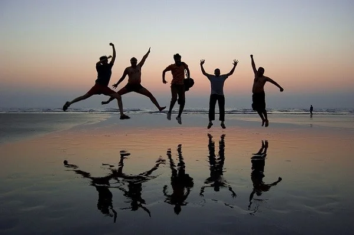

We went to the science museum, and it was amazing! I loved the interactive exhibits and building robots in the workshop. The planetarium show about stars and planets was super cool. Overall, the trip made science so much fun and interesting!
Our trip to the science museum was unforgettable! The interactive displays were fun, building robots was exciting, and the planetarium show was mind-blowing. It made learning science a thrilling adventure!
Each trip felt like a new adventure, sparking curiosity and growth. The bond between teacher and student grew stronger with every challenge and success.😊
The highlight of our visit was the robotics workshop. Each student built a simple robot, gaining practical skills in engineering and programming. The enthusiasm was infectious, and their teamwork was truly commendable. This hands-on experience not only deepened their understanding but also sparked potential future interests in STEM fields.